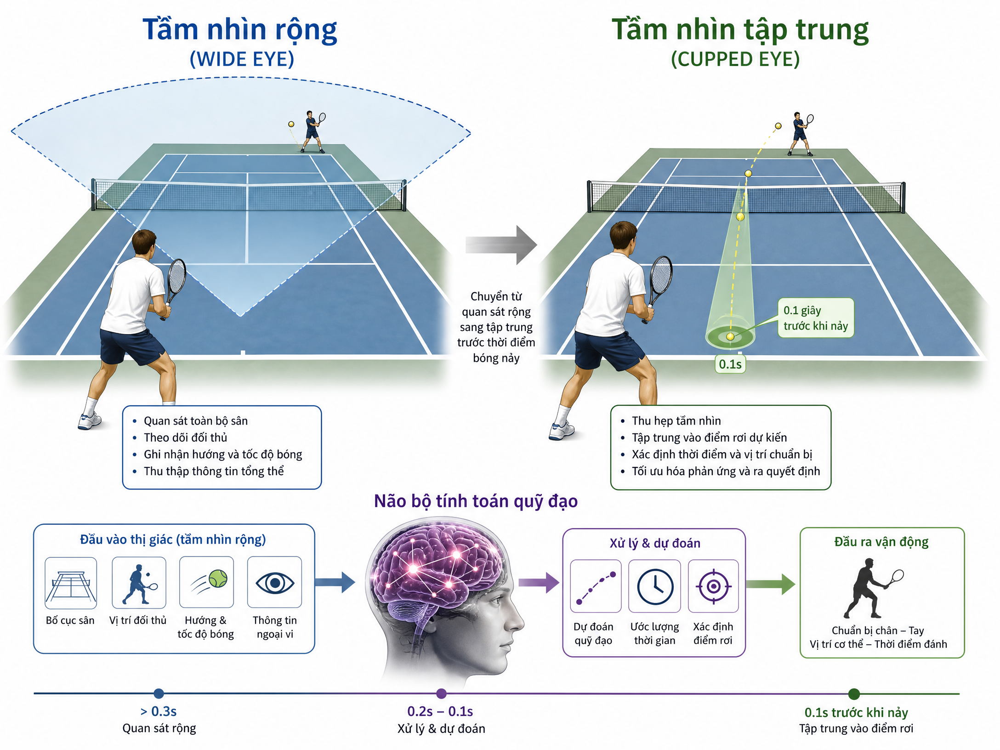
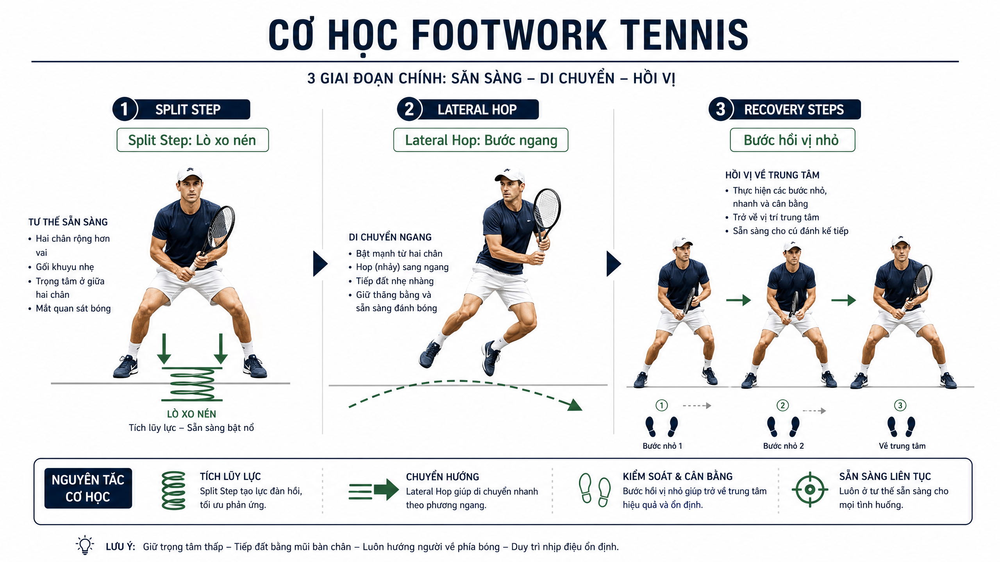
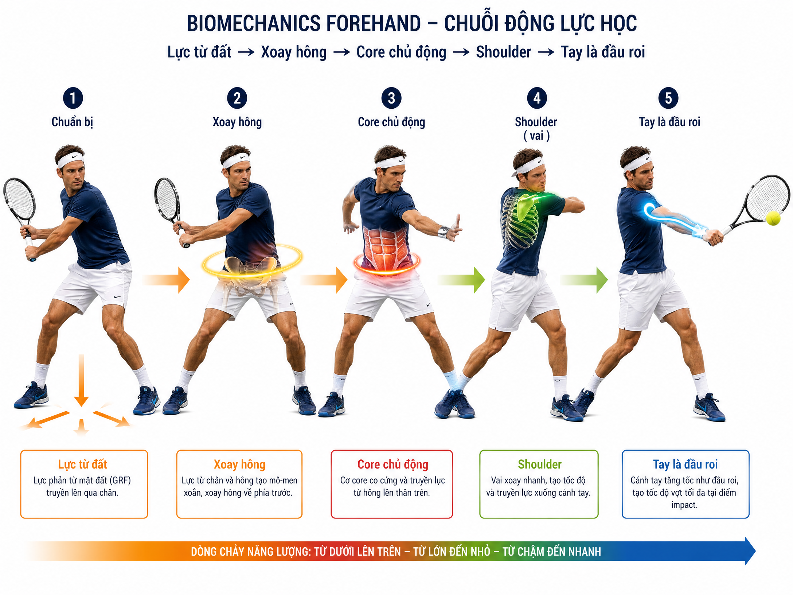
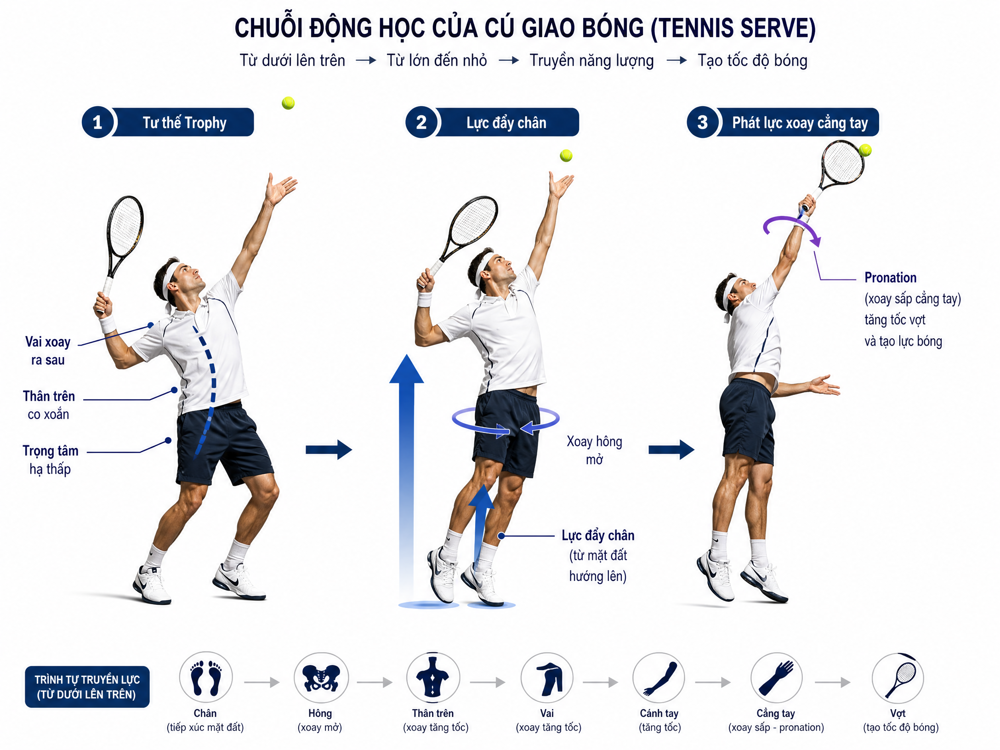
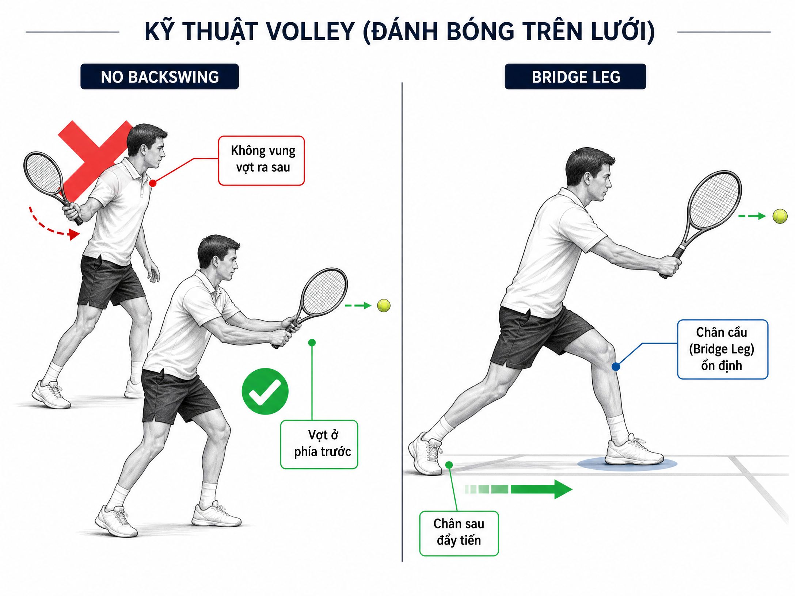

GIÁO_TRÌNH_TENNIS_TOÀN_DIỆN_CHO_NGƯỜI_CHƠI_TRUNG_NIÊN_(40-65_TUỔI)¶
GIÁO TRÌNH TENNIS TOÀN DIỆN CHO NGƯỜI CHƠI TRUNG NIÊN (40-65 TUỔI)
Lời Giới Thiệu
Chào mừng bạn đến với Giáo trình Tennis Toàn diện được thiết kế đặc biệt bởi Tennis Future Lab. Tài liệu này dành riêng cho nhóm người chơi phong trào ở độ tuổi từ 40 đến 65 --- những người sở hữu vốn sống phong phú nhưng cần một phương pháp tiếp cận tennis khoa học, an toàn và bền vững.
Thay vì chỉ tập trung vào các kỹ thuật bề mặt, giáo trình này đi sâu vào nguyên lý cơ sinh học, hệ thần kinh và triết lý vận động. Mục tiêu tối thượng là giúp bạn xây dựng những cú đánh dựa trên nền tảng vững chắc, giảm thiểu tối đa rủi ro chấn thương và tối ưu hóa hiệu quả thi đấu thông qua sự hiểu biết sâu sắc về cơ thể mình.
Triết lý trung tâm: \"Đừng đánh bằng tay --- hãy đánh bằng cả hệ thống sống.\" (Don't hit with your arm --- hit with your entire living system.)
Mỗi cú đánh trong tennis là một bài toán vật lý tinh vi: Lực từ đất (GRF) → Xoắn thân (SSC) → Core chủ động → Tay chỉ là đầu roi.
Lưu Ý An Toàn Cho Tuổi Trung Niên
Trước khi bắt đầu, hãy luôn ghi nhớ các quy tắc an toàn sau đây để bảo vệ sức khỏe của bạn trên sân:
-
Khởi động: Luôn dành ít nhất 10 phút để làm nóng cơ thể trước mỗi buổi tập. Đây là bước bắt buộc, không thể bỏ qua.
-
Nguyên lý phát lực: Ưu tiên việc xoay thân và hông để tạo lực. Tuyệt đối KHÔNG ưỡn lưng để lấy lực, điều này cực kỳ nguy hiểm cho cột sống.
-
Lắng nghe cơ thể: Khi cảm thấy mệt mỏi, hãy giảm lực đánh xuống còn 50% và tập trung vào cảm giác bóng cũng như kỹ thuật.
-
Dừng lại đúng lúc: Nếu cảm thấy đau khớp, hãy dừng tập ngay lập tức. Hãy nhớ rằng: Đánh đúng kỹ thuật sẽ ít đau hơn đánh sai.
Chương 1: Hệ Điều Khiển Tennis --- Mắt, Não và Thần Kinh
Trước khi học cách vung vợt, bạn cần hiểu thực sự ai là người đang điều khiển cú đánh. Đó không phải là đôi mắt hay cánh tay, mà chính là Hệ Thần Kinh Trung Ương (CNS) với não bộ là bộ xử lý trung tâm.
1.1. Hai Chế Độ Nhìn
Sai lầm phổ biến nhất của người chơi nghiệp dư là cố gắng \"dán mắt vào bóng\". Thực tế, mắt người không đủ tốc độ để theo dõi một quả bóng bay với vận tốc 100--180 km/h. Não bộ mới là cơ quan tính toán quỹ đạo.
Chế độ Đặc nhìn điểm & Ứng dụng
WIDE EYE Chiếm (Broad 80% View) thời gian. Quét toàn cảnh: đối thủ, bóng và vị trí sân. Giúp đọc tư thế vai, hông đối thủ để đoán hướng bóng.
CỤP MẮT Chiếm (Saccade 20% View) thời gian. Liếc nhanh xuống điểm nảy của bóng (chỉ dùng 0,1 giây trước khi bóng nảy).

Nguyên lý cốt lõi: Ball Tracking không phải chức năng của mắt, mà là quá trình tính toán dữ liệu của CNS. Hãy giữ đầu thẳng, thả lỏng cơ mặt và để não bộ làm \"phép màu\" của nó.
1.2. Bốn Nguồn Dữ Liệu Nhanh Hơn Mắt
Não bộ sử dụng bốn nguồn dữ liệu quan trọng để điều khiển cú đánh, thường nhanh hơn cả tín hiệu hình ảnh trực tiếp:
-
Hình ảnh tư thế: Đọc tư thế vai và hông của đối thủ TRƯỚC khi họ chạm bóng.
-
Điểm mù (Blind Spot): Não tự \"điền\" thông tin vào những khoảng trống khi mắt không theo kịp tốc độ bóng.
-
Âm thanh: Tiếng \"póc\" khi bóng chạm vợt truyền đến tai nhanh hơn hình ảnh truyền đến mắt.
-
Cảm giác bản thể (Proprioception): Cảm nhận áp lực từ bàn chân và sự tiếp xúc của cán vợt trên tay.
1.3. Bộ Ổn Định Hình Ảnh (VOR) và Core
Phản xạ Tiền đình - Mắt (VOR): Là phản xạ tự động giúp mắt cố định vào mục tiêu khi đầu di chuyển. Để VOR hoạt động tốt, bạn cần giữ đầu thẳng và cổ thả lỏng.
Core - Não bộ thứ hai: Thalamus (đồi thị) đóng vai trò như CPU lọc tín hiệu. Khi vùng Core ổn định, việc xử lý thông tin sẽ nhanh hơn, hướng tới trạng thái Automaticity (Tự động hóa) --- nơi cơ thể vận hành mượt mà mà không cần ý thức điều khiển từng chi tiết nhỏ.
Chương 2: Footwork --- Di Chuyển Thông Minh
Trong tennis, di chuyển không đơn thuần là \"chạy tới bóng\". Đó là nghệ thuật luôn ở trạng thái sẵn sàng với mức tiêu thụ năng lượng thấp nhất nhưng phản ứng nhanh nhất.
2.1. Nguyên Lý \"Đạp Xe\" Liên Tục
Đừng bao giờ đứng yên với hai bàn chân bệt xuống đất. Hãy luôn giữ cơ thể ở trạng thái \"idling\" (chờ đợi chủ động):
-
Quy tắc một chân: Luôn giữ gót chân sau nhấc nhẹ (khoảng 1-2 cm).
-
Tư thế so le (Staggered Stance): Chân trước chân sau, không đứng song song để tránh khóa hông.
2.2. Split Step --- Công Tắc Thần Kinh
Split step là một cú nhún nhẹ (hop) ngay khi đối thủ chuẩn bị chạm vợt vào bóng.
-
Thời điểm: Khi vợt đối thủ bắt đầu vung về phía trước.
-
Cảm giác: Như một lò xo đang nén, trọng tâm dồn lên mũi chân.
-
Lợi ích: Kích hoạt CNS, giúp bạn có thêm 300ms quý báu để chuẩn bị cho cú đánh.
2.3. Các Bước Di Chuyển Đặc Thù

Kỹ thuật Cách thực hiện
Lateral Di Hop chuyển ngang, tiếp đất bằng chân ngoài.
Drop Step Hạ người xuống như lò xo nén để chuẩn bị bung lực.
Cross-over Bước Step chân trong vượt qua để lấy đà khi cần di chuyển xa.
Recovery Sau khi Steps đánh, dùng các bước nhỏ (small steps) liên tục để quay về vị trí trung tâm.
Chương 3: Forehand --- Cú Đánh Tay Thuận
Forehand là vũ khí tấn công chính nhưng cũng là nơi dễ gây chấn thương nếu sai kỹ thuật. Chúng ta xây dựng cú đánh này từ mặt đất đi lên.
3.1. Khung Kim Cương (Diamond Shape)
Trước khi bóng tới, hai tay tạo thành hình kim cương trước ngực: tay không thuận giữ cổ vợt, tay thuận đặt hờ trên cán. Đây là tư thế kết nối toàn thân thành một khối thống nhất.
3.2. Nguồn Lực: GRF và SSC

Lực không sinh ra ở tay. Nó được truyền dẫn qua chuỗi động học:
-
Nạp lực (Load): Chân sau dồn 70-80% trọng lượng.
-
Xoắn thân (Coil): Thân trên xoay như lò xo, vai nghiêng xuống.
-
Truyền lực: Lực từ đất (GRF) → Hông mở → Core kéo vai → Vai kéo tay → Vợt chạm bóng.
3.3. Va Chạm và Topspin
Hãy để bóng \"cắn\" vào dây vợt (thời gian tiếp xúc khoảng 4-5ms). Thay vì cố gắng \"giết\" bóng bằng lực tay, hãy \"cứu\" bóng bằng cách tạo ra quỹ đạo cầu vồng an toàn.
- Topspin: Tạo ra bằng cách kéo vợt từ dưới lên (brush up). Cổ tay cần thả lỏng tự nhiên để topspin tự sinh ra khi cơ thể xoay đúng.
Chương 4: Backhand --- Cú Đánh Tay Trái
Backhand thường ổn định hơn forehand vì ít bị cám dỗ phát lực quá mạnh. Giáo trình khuyến nghị người chơi trung niên nên sử dụng Backhand hai tay để tăng độ ổn định và giảm tải cho vai.
4.1. Cơ Chế Sling Shot (Súng Cao Su)
Tương tự forehand, backhand dựa vào việc xoắn thân (Coil). Tay trái (đối với người thuận tay phải) đóng vai trò dẫn dắt cú đánh. Hãy để trọng lượng đầu vợt tự rơi và nảy lên theo đà xoay của hông.
4.2. Slice Backhand
Cú Slice (xoáy ngược) là vũ khí cực kỳ hữu ích cho tuổi trung niên:
-
Dùng để trả giao bóng mạnh hoặc cứu những đường bóng khó.
-
Kỹ thuật: Mặt vợt hơi mở, đưa vợt từ cao xuống thấp, cảm giác như đang \"cắt\" nhẹ dưới bóng.
Chương 5: Serve --- Cú Giao Bóng
Serve là cú đánh duy nhất bạn hoàn toàn kiểm soát. Triết lý của chúng ta là: Trọng lực + Xoay thân, không phải cơ bắp.
5.1. Chuỗi Động Học Serve

-
Trophy Pose: Tư thế chuẩn bị với tay tung bóng cao và vợt ở vị trí sẵn sàng sau lưng.
-
Tung bóng (Toss): Tung bằng cánh tay thẳng, bóng cao hơn điểm tiếp xúc 15-20 cm.
-
Leg Drive: Đẩy từ đất lên để khởi động chuỗi lực.
-
Pronation: Cẳng tay xoay quanh trục vào giây cuối cùng để tạo tốc độ đầu vợt tối đa.
Lưu ý: Cánh tay phải hoàn toàn thả lỏng (Loose Arm). Cánh tay gồng cứng sẽ làm chậm tốc độ đầu vợt và gây chấn thương vai.
Chương 6: Volley --- Cú Đánh Lưới
Volley ưu tiên sự ổn định và quyết đoán. Đây không phải là một cú swing thu nhỏ, mà là cú \"chặn và đẩy\".
6.1. Nguyên Lý \"Không Backswing\"
Tuyệt đối không đưa vợt ra sau vai. Ở trên lưới, bạn không có thời gian để vung vợt dài. Hãy giữ vợt ở phía trước tầm mắt.
6.2. Cấu Trúc Chân Bridge Leg

-
Chân trước: Đóng vai trò như một chiếc cầu (bridge) ổn định, chịu lực.
-
Chân sau: Đóng vai trò động cơ đẩy người về phía trước.
-
Luôn hạ thấp đầu gối đối với những quả bóng thấp, thay vì gập lưng.
Chương 7: Chiến Thuật --- Thắng Bằng Đầu
Chiến thuật thông minh giúp bạn tiết kiệm thể lực và bắt đối thủ phải di chuyển nhiều hơn.
7.1. Nguyên Tắc 80/20
Dành 80% thời gian để đánh bóng sâu về phía cuối sân (deep rally) để giữ an toàn. Chỉ dùng 20% thời gian để tấn công khi có cơ hội bóng ngắn rõ rệt.
7.2. Nghệ Thuật Ngụy Trang (Disguise)
Từ một tư thế chuẩn bị duy nhất (vai xoay, vợt nạp), hãy tập cách đưa bóng ra hai hướng khác nhau. Việc giữ vợt ở vị trí trung tính thêm 0,1 giây sẽ khiến đối thủ không thể đoán định được hướng bóng.
Kết Luận
Tennis ở tuổi trung niên là sự kết hợp giữa trí tuệ, sự bền bỉ và sự hiểu biết về cơ thể. Hãy kiên trì tập luyện theo các nguyên lý cơ sinh học này, bạn sẽ thấy mình không chỉ chơi tốt hơn mà còn cảm thấy khỏe mạnh và yêu đời hơn mỗi khi ra sân.
Chúc bạn có những giờ phút tuyệt vời trên sân tennis!
Biên soạn bởi: Phạm Đức Hải (Henry Pham) - Tennis Future Lab Năm biên soạn: 2026